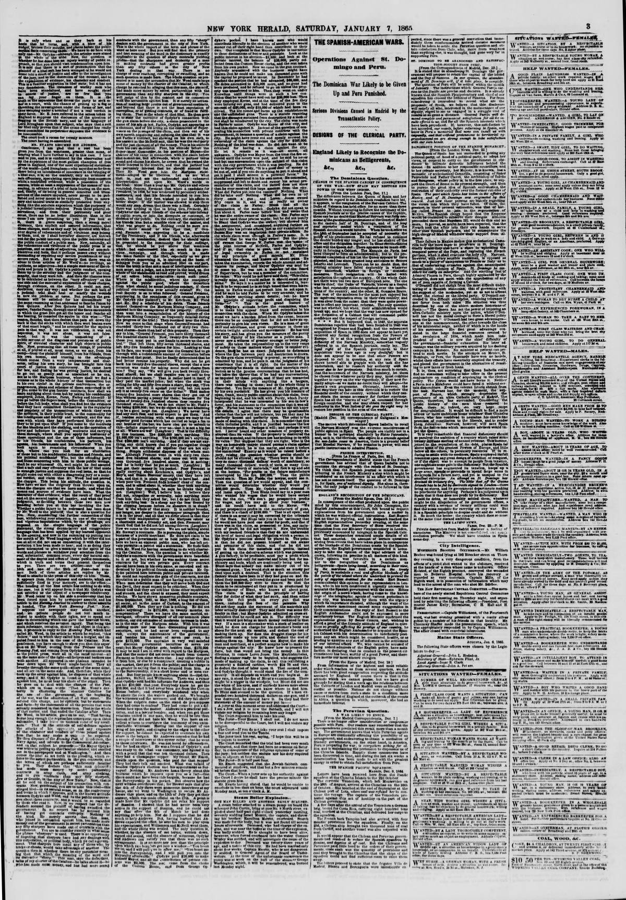

DR in the American PressRD en la Prensa Norteamericana
After Spain withdrew, the annexation argument moved to Washington. President Ulysses S. Grant pushed a treaty in 1869 to annex the Dominican Republic and lease Samaná Bay, sent a commission in 1870, and fought for the plan in public. American newspapers argued it as an American question — destiny, race, naval strategy, and the smell of corruption — with Charles Sumner leading the opposition until the Senate killed the treaty in 1870.Después de la retirada de España, el argumento de la anexión se mudó a Washington. El presidente Ulysses S. Grant impulsó en 1869 un tratado para anexar la República Dominicana y arrendar la bahía de Samaná, envió una comisión en 1870 y peleó el plan en público. Los periódicos estadounidenses lo discutieron como una cuestión estadounidense — destino, raza, estrategia naval y olor a corrupción — con Charles Sumner al frente de la oposición hasta que el Senado enterró el tratado en 1870.
In Santo Domingo the same plan read differently. President Buenaventura Báez had bargained with the country as if it were his own property, mortgaging its revenues and offering its bay; the Dominicans who opposed him, Luperón and the exiles among them, fought annexation as the sale of the nation itself. The Senate's refusal settled the question in Washington, though lease schemes around Samaná dragged on until 1874.En Santo Domingo el mismo plan se leía de otro modo. El presidente Buenaventura Báez había negociado con el país como si fuera su propiedad, hipotecando sus ingresos y ofreciendo su bahía; los dominicanos que se le oponían, Luperón y los exiliados entre ellos, combatieron la anexión como la venta de la nación misma. La negativa del Senado cerró la cuestión en Washington, aunque los planes de arrendamiento sobre Samaná se arrastraron hasta 1874.
Notice how rarely the American debate below asks Dominicans what they want. The annexation fight was conducted in Washington newspapers and Senate speeches; the Dominican answer — the Restoration generation's flat refusal to be sold — has to be read between the lines, and against them.Note cuán rara vez el debate estadounidense que sigue pregunta a los dominicanos qué quieren. La lucha por la anexión se libró en periódicos de Washington y discursos del Senado; la respuesta dominicana — la negativa rotunda de la generación de la Restauración a ser vendida — hay que leerla entre líneas, y contra ellas.

[From the Madrid Epoca, Dec. 18.] In consequence of the effect produced upon the public mind by this announcement, Sir John Crampton, the English Ambassador at this Court, felt bound to request explanations from his government upon a matter…
construction of a railway from Jaffa to Jerusalem.—In Mexico Maximilian has issued a manifesto directing a revision of the titles and claims under which ecclesiastical property has for some time been held, and, in effect, declared that it b…
over the Trans-Mississippi States. It also states that General Wallace announced that the United States are determined to enforce the Monroe doctrine in Mexico, and that the late President had proposed sending a fleet of three hundred armed…
islands of Cuba and Porto Rico—the only remaining pearls of the Spanish crown—from the overshadowing influence of this republic. Thus the great war against the rebellion, which all the nations of Europe supposed would end in the death of th…
against the government of President Geffrard had been completely suppressed. The rebels were defeated in a battle near Gonaives, after which their leaders fled and endeavored to make their escape from the country, and the troops laid down t…
the White Cross of the republic near the Haytien frontier, and declared war on their Spanish invaders. The Spanish affected to treat it as a mere tumultuous uprising of a few border villages of blacks; but there was no distinction of color …
the belligerents, but without success. The lives of the American and English Consuls had been frequently threatened by the Rebels, owing to their supposed sympathy with the cause of Geffrard.…
ing the new issue raised by General Gandara, the commander of the Spanish troops, with the Dominician Government, apparently only for the purpose of having a pretext to maintain a foothold with his forces in the republic. The Spanish Cortes…
in Santiago. He says that notwithstanding the havoc and spoliations of the Spaniards during their invasion, crops are now coming forward which promise ample subsistence for the inhabitants, and that the sacrifices which the war has compelle…
crops are now coming forward which promise ample subsistence for the inhabitants, and that the sacrifices which the war has compelled the people to endure have made them more united and determined to maintain their independence. This latter…
The Revolution in Hayti—President Jeffrard preparing to Escape—Suffering among the Negroes on the Island of Jamaica—An outbreak Feared—San Domingo Affairs. NEW YORK, Sept. 1.—The Herald's Kingston, Jamaica, correspondent says, that the head…
The paper recounts that Spain annexed the Spanish, Dominican half during the U.S. Civil War but Dominicans drove her out, and that a popular revolution then rose against General Pimentel in favor of Cabral as Protector, whose manifesto promised liberty, equality and fraternity. It contrasts the Dominican republic with Haiti, which it describes as also in revolution.
El periódico relata que España anexó la mitad española, dominicana, durante la Guerra Civil estadounidense pero los dominicanos la expulsaron, y que luego una revolución popular se levantó contra el general Pimentel a favor de Cabral como Protector, cuyo manifiesto prometía libertad, igualdad y fraternidad. Contrasta la república dominicana con Haití, que describe también en revolución.
News from St. Domingo to September 9 describes Dominicans celebrating the second anniversary of their liberation from Spain, after eighteen months of fighting forced Spain to evacuate the island. General Pimentel, elected provisional president in March, became unpopular for harsh and unlawful acts, and after citizens in the capital repudiated him he resigned, while General J. M. Cabral was commissioned as Protector of the republic to summon a National Convention.
Noticias de Santo Domingo hasta el 9 de septiembre describen a los dominicanos celebrando el segundo aniversario de su liberación de España, después de que dieciocho meses de lucha obligaron a España a evacuar la isla. El general Pimentel, elegido presidente provisional en marzo, se volvió impopular por actos duros e ilegales, y después de que los ciudadanos de la capital lo repudiaron, renunció, mientras el general J. M. Cabral fue nombrado Protector de la república para convocar una Convención Nacional.
on the 24th instant, and the choice seems to lie between Pedro Valverde and General Cabral. Don Pedro Valverde is a noble soldier, and a finished gentleman of pure white stock. He is of the "Yankee party," and is openly pledged to sustain t…
wards the capital, with cries of "Long live Baez!" and "Death to Cabral!" They evidently had confederates in the Government, for, at the critical moment, a curious scene took place in the Supreme Congress, which was in session, deliberating…
the capital with cries of "Long live Baez!" and "Death to Cabral!" They evidently had confederates in the government; for, at the critical moment, a curious scene took place in the Supreme Congress, which was in session, deliberating on the…
ceeded toward the capital with cries of 'Long live Baez!' and 'Death to Cabral!' They evidently had confederates in the government, for, at the critical moment, a curious scene took place in the Supreme Congress, which was in session, delib…
quelled, yet there are doubts about Mr. Baez remaining in power. A coup d'etat effected his elevation to the Presidency through the treason of General Cabral, the only other candidate, who, knowing his own incapacity to occupy that high pos…
Although this revolution has been so easily quelled, yet there are doubts about Mr. Baez remaining in power. A coup d'état effected his elevation to the Presidency through the treason of General Cabral, the only other candidate, who, knowin…
giving the substance of a conversation held there on the 14th of January, between Secretary Seward and President Baez, at the national palace. The Cabinet of Dominica were present. The respectability of the source whence the information com…
republics around us only impart to us the strength which we in turn extend to them. We have, therefore, no choice but to recognize the republic of Dominica as soon as it shall afford to us the necessary guarantee of its own stability. We ha…
In an exchange printed by the paper, a Dominican speaker pleads for recognition by the United States, calling the enjoyment of American favor essential to Dominica's stability and peace and hoping that the proclamation of general liberty in the United States had removed the obstacles to recognition. Secretary Seward replies by recounting how the United States established itself as a republic on the principle of the equality of men while African slavery still existed under state laws.
En un intercambio publicado por el periódico, un orador dominicano suplica el reconocimiento de Estados Unidos, y califica el disfrute del favor estadounidense de esencial para la estabilidad y la paz de Dominica, con la esperanza de que la proclamación de la libertad general en Estados Unidos hubiera eliminado los obstáculos para el reconocimiento. El secretario Seward responde relatando cómo Estados Unidos se estableció como república sobre el principio de la igualdad de los hombres mientras la esclavitud africana aún existía bajo las leyes estatales.
to the mutual advantage of both parties interested. The disabilities that heretofore existed on both sides are fully explained, and a far more friendly feeling secured than could have possibly been reached in any other way. In the brief sta…
and considered himself a personal friend of Mr. Seward. From the Republic of San Domingo we have some interesting intelligence regarding Secretary Seward's recent visit. Mr. Seward called on Baez, the new President, and expressed his gratif…
RECOGNITION OF THE DOMINICAN REPUBLIC.—On the 2d inst., the following message from the President was received by the House. "To the Senate and House of Representatives: Believing the commercial interests of our country would be promoted by …
After the adoption of various resolutions of inquiry, the House resolved itself into a Special Committee of the Whole on the State of the Union, and listened to speeches by Mr. Latham, of West Virginia, who argued that the Southern States w…
Proposals had been made to the Haytien Government by an English shipowner, offering to raise both vessels and guaranteeing to put them in condition to proceed to St. Thomas or Jamaica, where they could be entirely restored. The steamer Cali…
The paper reports the Dominican-Haitian question was the order of the day as a Haitian steamer arrived at the Ozama River with a commission of plenipotentiaries received by the Dominican government, with 21-gun salutes exchanged. Conferences for the preliminary basis of a treaty had begun, with Dominican negotiators named.
El periódico informa que la cuestión dominico-haitiana era el tema del día cuando un vapor haitiano llegó al río Ozama con una comisión de plenipotenciarios recibida por el gobierno dominicano, con salvas de 21 cañonazos intercambiadas. Las conferencias para la base preliminar de un tratado habían comenzado, con negociadores dominicanos nombrados.
The bay of Samana, which it is announced is about being sold to the United States by the Dominican Government, is on the south side of the peninsula of that name, situated on the north-east coast of the island of Hayti. The bay is 43 miles …
St. Domingo cable news: the National Congress has approved the treaty with Haiti; Eugene Smith has arrived with the treaty negotiated with the United States; General Cabral and the Haitian commissioners have reached the capital.
Noticias por cable de Santo Domingo: el Congreso Nacional ha aprobado el tratado con Haití; Eugene Smith ha llegado con el tratado negociado con Estados Unidos; el general Cabral y los comisionados haitianos han llegado a la capital.
produce the most beneficial result to both. The experience of the past, and the late Spanish intervention, have shown the Haytian people and the Dominican people that it is only by means of union that they can maintain their independence an…
Another article of the treaty pledges the contracting parties to preserve inviolate the integrity of their respective territories. No portion of either Hayti or St. Domingo is on any account to be alienated. This being so, there is now no h…
Havana advices: an armed expedition of ex-President Báez's followers landed at Monte Cristi from Haitian vessels and occupied Guayubín, but was attacked and beaten by General Polanco; the Dominican minister to Haiti has been recalled, and President Cabral has negotiated a London loan.
Noticias de La Habana: una expedición armada de seguidores del expresidente Báez desembarcó en Monte Cristi desde buques haitianos y ocupó Guayubín, pero fue atacada y derrotada por el general Polanco; el ministro dominicano en Haití ha sido retirado y el presidente Cabral ha negociado un préstamo en Londres.
The paper reports an armed expedition of followers of ex-President Báez landed at Monte Cristi from Haitian vessels and occupied Guayabín, but were attacked and beaten by General Tolanco. It says the Dominican minister to Haiti was recalled, President Cabral had gone to Cibao, and he had negotiated a loan with London capitalists for ten million francs.
El periódico informa que una expedición armada de seguidores del expresidente Báez desembarcó en Monte Cristi desde buques haitianos y ocupó Guayabín, pero fue atacada y derrotada por el general Tolanco. Dice que el ministro dominicano en Haití fue retirado, el presidente Cabral había ido al Cibao y había negociado un préstamo con capitalistas de Londres por diez millones de francos.
ST. DOMINGO. An armed expedition of the partisans of General Baez has landed at Monte Christi, in Haytian vessels. They occupied the town of Guayabin, where the revolution against President Salnave broke out in September last. The troops of…
St. Domingo. General Cabral, at all events, has ordered the Minister lately sent to Port au Prince to exchange the ratifications of the treaty to suspend all relations with Salnave's government, and leave the Haytien territory without delay…
HAVANA, Nov. 17—We have the announcement that St. Domingo City has been destroyed, probably by an earthquake. I have telegraphed for details, which I shall forward at once. The news of the insurrection in Hayti is confirmed. On the 12th of …
Destruction of St. Domingo. NEW YORK, Nov. 18.—The Herald's Havana special, of the 17th, says: We have an announcement that St. Domingo City has been destroyed, probably, by an earthquake. I have telegraphed for details, which I shall forwa…
DESTRUCTION OF ST. DOMINGO CITY. NEW YORK, Nov. 18.—The Herald's Havana special of the 17th says: We have the announcement that St. Domingo city has been destroyed, probably by an earthquake. I have telegraphed for the details, which I shal…
St. Domingo Hurricane. NEW YORK, Nov. 22.—The Herald's Havana dispatch says, by the English steamer Solent we have further details of the St. Domingo disaster. A terrible hurricane blew over the island on the 30th of October. It desolated t…
LATE FROM HAYTI. The Dominican Government had recalled its Minister to Hayti, in consequence of an insurrectionary outbreak in the district of Cibao, in Santo Domingo, wnich the Dominican authorities believed had been instigated by the Hayt…
From St. Domingo. HAVANA, Dec. 6.—Evening.—Señor Pujol is not at all reserved as to the commission which he bears. It is to close negotiations in relation to Samana. He will leave here to-morrow by the steamer Morro Castle for New York. Gen…
FROM HAVANA. Late from St. Domingo—Baez Probably President. HAVANA, Dec. 6.—Evening.—Senor Pujol is not at all reserved as to the commission which he bears. It is to close negotiations in relation to Samana. He will leave here to-morrow by …
ST. DOMINGO. War between St. Domingo and Hayti was imminent, in fact, had already broken out, the Dominican war schooner Copotille having been captured by the Haytian steamer Sylvan. It appears that the Capotille had been supplying munition…
MR. SEWARD'S CHANCES FOR SAMANA BAY. What will Mr. Seward do under the circumstances? He thought he had this business about the Bay of Samaná nicely fixed, and that our navy would ride proudly there with the Stars and Stripes flying from th…
CABRAL AND SAMANA. He has reopened negotiations with Mr. Seward for leasing the Bay of Samana to the United States; and as the Dominicans believe that the proposed lease is actually intended to cover a sale of that place, they look upon Cab…
Havana. HAVANA, March 9.—A deputation of Dominicans had gone to Curacoa to bring President Baez to the capital. Hungod, Luciaro and Gomez were acting as administrators af the government pending the arrival of President Baez. The cholera had…
SANTO DOMINGO. SPECIAL TELEGRAM TO THE HERALD. Baezist Policy—Samana to be a Free Port—An Alliance with Hayti. HAVANA, April 27, 1868. The steamer Pajaro del Oceano, Captain Ochoa, has arrived here with advices from St. Domingo to the 20th …
ST. DOMINGO. Carlos and Valentin Baez have lately been in Hayti on a confidential mission, offering, it is said, a treaty of great and self-evident advantages to both republics. It proposes to establish a liberal and uniform tariff, place a…
Several Dominican generals recently made the island of St. Thomas a rendezvous. Among them were Cabral, Luperon, Pimentel, Garcia, Polanco, Ricardo, Fernandez and Pimentel. They concerted a plan of operations against Baez. The result was th…
ST. DOMINGO. Precarious State of the New Government—The Reaction Organized—Expected Invasion from Venezuela—Health of the Island, &c. ST. THOMAS, July 14, 1868. The news from St. Domingo confirms the impression that the government of Genera…
THE NEWS. EUROPEAN. The steamship City of Baltimore, from Liverpool via Queenstown, arrived at this port yesterday. The public mind in England was very much occupied with the approaching general election. Accounts from the manufacturing dis…
A letter from Santo Domingo City dated July 4, 1868 reports a spreading insurrection against President Baez, with General Polanco in the field in the south under ex-President Cabral and General Luperon, the revolutionists' commander-in-chief, sailing from St. Thomas to take command in the north. Government troops at Azua stay on the defensive while towns desert, prisoners are taken at Higuey, and the capital lives in alarm as money runs out and Baez cannot find men willing to fight.
Una carta desde la ciudad de Santo Domingo fechada el 4 de julio de 1868 informa de una insurrección creciente contra el presidente Baez, con el general Polanco en campaña en el sur bajo el mando del expresidente Cabral y el general Luperon, comandante en jefe de los revolucionarios, zarpando de Santo Tomás para tomar el mando en el norte. Las tropas del gobierno en Azua se mantienen a la defensiva mientras los pueblos quedan desiertos, se toman prisioneros en Higuey y la capital vive en alarma porque se acaba el dinero y Baez no encuentra hombres dispuestos a luchar.
EXPECTED ATTACK ON PORT-AU-PRINCE. ADVVICES FROM HAYTI. Salnave Still Defending the Capital—The American Minister—The Cacos Approaching. Advices from Port-au-Prince to the 10th ult. report that the revolutionary forces under Salnave's oppon…
A dispatch from St. Domingo City, dated July 11, 1868, reports that rebel General Timoteo Ogando routed the government forces at Ceiba, killing General Brigman, and that an alarmed President Baez placed two cannons before his house and ordered forty prominent citizens, including men he had held in prison, to leave the country. It also reports aid and money reaching Baez from Curacao, Dominican exiles sailing from there under General Aybar, government troops living off the cattle of private owners, and whole companies deserting on the march.
Un despacho desde la ciudad de Santo Domingo, fechado el 11 de julio de 1868, informa que el general rebelde Timoteo Ogando derrotó a las fuerzas del gobierno en Ceiba, dando muerte al general Brigman, y que un alarmado presidente Báez colocó dos cañones ante su casa y ordenó a cuarenta ciudadanos prominentes, incluidos hombres que había tenido presos, que abandonaran el país. También informa de ayuda y dinero que llegaban a Báez desde Curazao, de exiliados dominicanos que zarparon de allí bajo el mando del general Aybar, de tropas gubernamentales que vivían del ganado de propietarios privados y de compañías enteras que desertaban en la marcha.
ST. DOMINGO. The Triumph of the Revolution Foreseen—Baez Looking to the United States for Help—Sale of Samana, &c. ST. THOMAS, Nov. 14, 1868. The latest accounts from St. Domingo show that the government of Baez is tottering to its fall. Th…
A private letter from Santo Domingo denounces the Baez administration, saying its efforts to obtain gold through the Samana negotiation, a Spanish protectorate and foreign loans have failed, while ruinous contributions are exacted from the people. It describes cattle seized in the province of La Vega and sold in Santiago, with the money then presented in La Vega as part of a foreign loan, and it lists arrests, forced contributions, the exile of 22 political prisoners on the schooner Dos Hermanos, and executions in Azua.
Una carta privada desde Santo Domingo denuncia a la administración de Báez y dice que sus esfuerzos por obtener oro mediante la negociación de Samaná, un protectorado español y préstamos extranjeros han fracasado, mientras se exigen contribuciones ruinosas al pueblo. Describe ganado incautado en la provincia de La Vega y vendido en Santiago, cuyo dinero fue presentado después en La Vega como parte de un préstamo extranjero, y enumera arrestos, contribuciones forzadas, el exilio de 22 presos políticos en la goleta Dos Hermanos y ejecuciones en Azua.
HAVANA, Nov. 30.—Late advices from St. Domingo report all quiet on the Haytien frontier. The rebel General Orgando was severely wounded in the recent skirmish. Colonel Hevin, another rebel, was a prisoner, and had been sentenced to be shot,…
St. Domingo. The Advertiser's correspondent assures us that the idea of the United States obtaining any foothold in either part of the island is utterly distasteful to the natives both of Dominica and Hayti. Of the character of the former p…
A letter to the editor attacks Secretary of State Seward's shifting plans for St. Domingo, arguing that whether the form is intervention, a protectorate or annexation, the result would be enormous wealth for certain private individuals. The writer says President Baez, entrenched in his capital with civil wars to look after and exiles including Cabral returning, proposes through Seward to transfer to the United States the parts of his country over which he has no control.
Una carta al editor ataca los cambiantes planes del secretario de Estado Seward para Santo Domingo, argumentando que, ya sea bajo la forma de intervención, de protectorado o de anexión, el resultado sería una riqueza enorme para ciertos particulares. El autor dice que el presidente Báez, atrincherado en su capital con guerras civiles que atender y exiliados como Cabral de regreso, propone por medio de Seward transferir a los Estados Unidos las partes de su país sobre las que no tiene ningún control.
A Washington letter attacks Secretary Seward's scheme for St. Domingo, which shifted within weeks from a protectorate to annexation with no explanation offered for either. The writer argues that President Baez, entrenched in his capital with several civil wars to look after, has no more right to give his country to the United States than Seward would have to give the United States to Great Britain, and warns that the Samana Bay Company and the Alta Vela Guano Company would gain land, mines and guano while the United States took on the Dominican public debt.
Una carta desde Washington ataca el plan del secretario Seward para Santo Domingo, que en pocas semanas pasó de un protectorado a la anexión sin que se ofreciera explicación alguna de ninguno de los dos. El autor sostiene que el presidente Báez, atrincherado en su capital con varias guerras civiles que atender, no tiene más derecho a entregar su país a los Estados Unidos que el que tendría Seward de entregar los Estados Unidos a Gran Bretaña, y advierte que la Samana Bay Company y la Alta Vela Guano Company ganarían tierras, minas y guano mientras los Estados Unidos asumían la deuda pública dominicana.
The restored republic then accredited Don Pablo Pujol, an honorable and enlighted patriot, to treat with the Washington Cabinet for a naval depot at Samana 'or Manzanillo, on the terms proposed by Commissioner Cazneau in 1854 or any other w…
ST. DOMINGO. Condition of the Country—Disappearance of the Paper Currency—Manoeuvres of Cabral—The Annexation Feeling—Trade with Europe. ST. DOMINGO, May 20, 1869. I complained in my last—of the 12th instant or thereabouts—that the rains we…
THE FIRE AT PUERTO PLATA—INCORRECT NEWS BY THE HAVANA CABLE—THE COUNTRY QUIET—DOMINICAN VOLUNTEERS FOR THE CUBAN ARMY—STRONG FEELING IN FAVOR OF ANNEXATION TO THE UNITED STATES. By the arrival at this port yesterday of the schooner Charles …
ST. DOMINGO. LUPERON DECLARED A PIRATE—FAVORABLE REPORTS OF BAEZ. ST. DOMINGO, June 20, via HAVANA, June 29.—The Dominican Senate has declared Gen. Luperon and the crew of the steamer Telegrafo pirates. The people of Puerto Plata and Samana…
A correspondent of the steamer Tybee, writing from Santo Domingo City on June 22, 1869, describes five lively days loading an assorted cargo of exports and visiting the capital, which he calls the oldest city in the western hemisphere, its site selected by Christopher Columbus. He describes the old walls and fortifications, the chapel built by Columbus and his sundial, the first cathedral with its gilded high altar and silver furnishings, and the many ancient Spanish buildings still in use, in a city whose population is now about half the 20,000 it once held.
Un corresponsal del vapor Tybee, que escribe desde la ciudad de Santo Domingo el 22 de junio de 1869, describe cinco días animados cargando un surtido cargamento de exportaciones y visitando la capital, a la que llama la ciudad más antigua del hemisferio occidental, cuyo sitio fue escogido por Cristóbal Colón. Describe las viejas murallas y fortificaciones, la capilla construida por Colón y su reloj de sol, la primera catedral con su altar mayor dorado y sus enseres de plata, y los muchos edificios españoles antiguos todavía en uso, en una ciudad cuya población es ahora cerca de la mitad de los 20,000 habitantes que tuvo una vez.
REVOLUTIONISTS AFLOAT. The Crusading Steamer Telegrafo—Sailing Under American, Spanish, Haytien and Venezuelan Colors—Her Official Status—Declared a Pirate by the Dominican Republic. We gave yesterday in our St. Domingo correspondence a ful…
A letter from St. Johns reports that the American steamer El Heroe, bound from New York for the Orinoco, put in there in distress after touching at Puerto Plata and Samana, where it was rumored to be a filibuster expedition and was said to have landed men and arms. Her captain maintained that the vessel had been built under another name for a Venezuelan company to navigate the Orinoco, and the letter adds that the steamer Telegrafo had fought two armed schooners of the Baez government off Samana and disabled them.
Una carta desde St. Johns informa que el vapor estadounidense El Héroe, en ruta de Nueva York hacia el Orinoco, llegó allí en dificultades tras tocar en Puerto Plata y Samaná, donde se rumoreaba que era una expedición filibustera y se decía que había desembarcado hombres y armas. Su capitán sostuvo que la embarcación había sido construida con otro nombre para una compañía venezolana destinada a navegar el Orinoco, y la carta añade que el vapor Telégrafo había combatido contra dos goletas armadas del gobierno de Báez frente a Samaná y las había dejado inutilizadas.
MOVEMENTS OF THE STEAMER TELEGRAFO—THE REVOLUTIONISTS AND THE SAMANA QUESTION—STEAM COMMUNICATION WITH NEW-YORK. BARRAHANO, July 9.—Shortly after the fight in the Bay of Samana, between the steamer Telegrafo and the two armed schooners, whi…
A special report from St. Domingo describes Samana Bay in detail, calling it a powerful and convenient naval station if the United States becomes its possessor. It traces the bay's entrance, headlands, landmarks such as Sugar Loaf Mountain, its channels and reefs, and its inner anchorage where a fleet, fortifications, docks and warehouses could be placed.
Un informe especial desde Santo Domingo describe en detalle la Bahía de Samaná, llamándola una estación naval poderosa y conveniente si los Estados Unidos llegan a poseerla. Traza la entrada de la bahía, sus cabos, puntos de referencia como la montaña Pan de Azúcar, sus canales y arrecifes, y su fondeadero interior, donde podrían colocarse una flota, fortificaciones, muelles y almacenes.
This special report, datelined St. Domingo, July 12, 1869, presents Samana Bay as an American Gibraltar of the Antilles and describes its history, geography and importance to the United States. It recounts a fight in the bay between the Dominican war schooners Capotilla and Alta Gracia and the craft Telegrafo, and then surveys the bay's entrance, headlands, channels and islands, and the Yuna river, which enters the bay at its western end and is one of the largest rivers on the island.
Este reportaje especial, fechado en Santo Domingo el 12 de julio de 1869, presenta la bahía de Samaná como un Gibraltar americano de las Antillas y describe su historia, su geografía y su importancia para los Estados Unidos. Relata un combate en la bahía entre las goletas de guerra dominicanas Capotilla y Alta Gracia y la embarcación Telégrafo, y luego describe la entrada de la bahía, sus cabos, canales e islas, y el río Yuna, que desemboca en la bahía en su extremo occidental y es uno de los ríos más grandes de la isla.
A special report dated July 12, 1869 calls Samana Bay the American Gibraltar of the Antilles and describes it in detail: a mouth twenty-one miles wide between Cape Samana and Cape Raphael, a reach of thirty miles to the mouth of the Yuna River, and sheltering cays and reefs. It also recounts the defeat of Luperon's vessel Telegrafo by the Dominican war schooners Capotillo and Alta Gracia, and presents the bay as the anchorage and fortified naval station the United States would gain by possessing it.
Un reportaje especial fechado el 12 de julio de 1869 llama a la bahía de Samana el Gibraltar americano de las Antillas y la describe en detalle: una boca de veintiún millas de ancho entre el cabo Samana y el cabo Raphael, una extensión de treinta millas hasta la desembocadura del río Yuna, y cayos y arrecifes que la protegen. También relata la derrota del buque Telegrafo de Luperon por las goletas de guerra dominicanas Capotillo y Alta Gracia, y presenta la bahía como el fondeadero y la estación naval fortificada que los Estados Unidos ganarían al poseerla.
ST. DOMINGO. Across the Island—La Vega Real—Beautiful Savannas—Arrival at Cotuy—Crossing the Isabella—Arrival at the Republican Capital—Natural Resources of the Island. ST. DOMINGO, W. I., July 8, 1869. A journey from Santiago de los Caball…
Latest news reports that Azua is closely besieged and communication with Barahona is entirely cut off, after the vessel Telegrafo took or destroyed the coasting vessels that supplied the coast cities. Several hundred troops were sent out to reinforce Azua and drive back the revolutionists under Cabral, and if Cabral takes Azua the way to the capital will be opened, while President Baez feels very confident of maintaining himself in position.
Las últimas noticias informan que Azua está estrechamente sitiada y la comunicación con Barahona está totalmente cortada, después de que el barco Telégrafo capturó o destruyó los barcos costeros que abastecían a las ciudades de la costa. Varios cientos de soldados fueron enviados a reforzar Azua y hacer retroceder a los revolucionarios de Cabral, y si Cabral toma Azua quedará abierto el camino a la capital, mientras el presidente Báez se siente muy confiado en mantenerse en su puesto.
Writing from Porto Plata on September 6, 1869, the correspondent recalls that Columbus founded Isabella, the first European town in the New World, near here, and that only ruins remain where it stood. He describes a country whose trade has been almost annihilated, with Porto Plata and St. Domingo City as its principal outlets and small trade also at Azua and Samana, and reports an unusually large tobacco crop, estimated at 100,000 quintals for export, shipped almost exclusively to Hamburg, with talk of a railroad from Santiago to carry it to the sea.
Escribiendo desde Puerto Plata el 6 de septiembre de 1869, el corresponsal recuerda que Colón fundó cerca de aquí La Isabela, la primera ciudad europea del Nuevo Mundo, y que solo quedan ruinas donde estuvo. Describe un país cuyo comercio ha sido casi aniquilado, con Puerto Plata y la ciudad de Santo Domingo como sus principales salidas y un pequeño comercio también en Azua y Samaná, e informa de una cosecha de tabaco inusualmente grande, estimada en 100.000 quintales para la exportación, embarcada casi exclusivamente a Hamburgo, mientras se habla de un ferrocarril desde Santiago para llevarla al mar.
A letter from St. Domingo dated October 8, 1869 says the summary of Dominican feeling on annexation is 'ready and eager,' but that a painful fear lingers that Congress might refuse to receive the country. If Dominicans offered their country and were turned away, the writer warns, Baez and his party would be swept from power, so the invitation, he argues, must come from the United States.
Una carta de Santo Domingo fechada el 8 de octubre de 1869 dice que el sentimiento dominicano sobre la anexión se resume en estar 'listos y deseosos', pero que persiste el temor doloroso de que el Congreso pudiera negarse a recibir al país. Si los dominicanos ofrecieran su país y fueran rechazados, advierte el autor, Báez y su partido serían barridos del poder, por lo que la invitación, sostiene, debe venir de los Estados Unidos.
The dispatch gives the case of Mr. Davis Hatch, a United States citizen who was living at Barahona as agent of a New York company interested in working salt mines. When government troops evacuated the port at the end of August, Hatch was taken with them to Azua and arrested, then brought to the capital and held in close confinement, then taken back to Azua, tried by court martial and sentenced to be shot. A messenger was at once sent back to Azua with a pardon for Hatch, and the dispatch says the anxiety of five days of suspense had a severe effect on his mind and health.
El despacho expone el caso del señor Davis Hatch, ciudadano de los Estados Unidos que vivía en Barahona como agente de una compañía de Nueva York interesada en explotar minas de sal. Cuando las tropas del gobierno evacuaron el puerto a finales de agosto, Hatch fue llevado con ellos a Azua y arrestado, luego trasladado a la capital y mantenido en estricto confinamiento, y después devuelto a Azua, juzgado por un consejo de guerra y condenado a ser fusilado. De inmediato se envió un mensajero de regreso a Azua con un indulto para Hatch, y el despacho dice que la angustia de cinco días de suspense tuvo un efecto grave en su mente y su salud.
In a speculative editorial, the paper predicts a sequence toward annexation: a U.S. naval station near Monte Cristi, a Dominican declaration for immediate unconditional annexation, then a similar declaration from the Haitian side. It urges recognition of the Saget government in Haiti as hastening that outcome.
En un editorial especulativo, el periódico predice una secuencia hacia la anexión: una estación naval estadounidense cerca de Monte Cristi, una declaración dominicana a favor de la anexión inmediata e incondicional, y luego una declaración similar del lado haitiano. Insta a reconocer el gobierno de Saget en Haití para acelerar ese resultado.
THE New York Sun has discovered something out of which to manufacture a sensation. That paper says, editorially, in its issue of the 11th inst., that the extraordinary preparations now going on in the navy yards are not in expectation of wa…
ST. DOMINGO. The steamer Tybee, Captain Delanoy, from St. Domingo the 16th and Porto Plata the 19th, arrived here yesterday. She brings letters and papers up to date of sailing. The compliments of the purser are acknowledged. Political Affa…
A Washington correspondent offers a sketch of Haiti and Dominica to localize the island for readers, describing Cuba, Santo Domingo and Puerto Rico as three large islands lying almost in line in the middle of the West Indies. The piece promises a view drawn from conversations with American consular agents and Americans holding interests there.
Un corresponsal en Washington ofrece un bosquejo de Haití y Dominica para situar la isla ante los lectores, y describe a Cuba, Santo Domingo y Puerto Rico como tres grandes islas situadas casi en línea en el centro de las Indias Occidentales. El artículo promete una visión extraída de conversaciones con agentes consulares estadounidenses y con estadounidenses que tenían intereses allí.
A United States Navy lieutenant writing from the island reports that he has travelled some two hundred miles since leaving Santo Domingo, crossing the mountains and now working on the northern side under his instructions, keeping a full journal of what he has seen. He says that wherever he went he received the kindest attention, even in the mountains, and that he might have travelled with any amount of money without fear of being molested, though he also saw misery and destitution that would make the heart ache; the island's resources, he writes, are inexhaustible and want only population and a more industrious people to develop them.
Un teniente de la Marina de los Estados Unidos que escribe desde la isla informa que ha viajado unas doscientas millas desde que salió de Santo Domingo, cruzando las montañas y trabajando ahora en el lado norte según sus instrucciones, llevando un diario completo de lo que ha visto. Dice que dondequiera que fue recibió la atención más amable, incluso en las montañas, y que podría haber viajado con cualquier cantidad de dinero sin temor de ser molestado, aunque también vio una miseria y una indigencia que daban dolor al corazón; los recursos de la isla, escribe, son inagotables y solo necesitan población y un pueblo más industrioso para desarrollarlos.
Policy of the Administration in the West Indies. We published yesterday a glowing account of the reported lease of the Bay of Samana, island of St. Domingo, by the United States government, which was communicated to us, and also a letter fr…
A dispatch from New York reports that the United States frigate Albany arrived from St. Domingo carrying Commissioners Porter, Ingalls and Sackett. The commissioners, acting in the name of the United States, had succeeded in leasing the bay and peninsula of Samana from the Dominican authorities for fifty years, and the first payment had been made.
Un despacho de Nueva York informa que la fragata estadounidense Albany llegó desde Santo Domingo con los comisionados Porter, Ingalls y Sackett a bordo. Los comisionados, actuando en nombre de los Estados Unidos, habían logrado arrendar a las autoridades dominicanas la bahía y la península de Samaná por cincuenta años, y ya se había hecho el primer pago.
Writing from Havana, a correspondent reports that the Stars and Stripes were flying over Samana Bay in token of United States possession, and then surveys the new acquisition in detail. He describes the bay's deep, sheltered coves, the port of Cacao, the old careening place used by pirates, the inlet once chosen for a United States naval station, and the town of Santa Barbara, capital of the peninsula.
Escribiendo desde La Habana, un corresponsal informa que la bandera de los Estados Unidos ondeaba sobre la bahía de Samaná en señal de posesión estadounidense, y luego describe la nueva adquisición en detalle. Describe las ensenadas profundas y abrigadas de la bahía, el puerto de Cacao, el antiguo lugar de carena usado por los piratas, la entrada escogida en otro tiempo para una estación naval de los Estados Unidos, y el pueblo de Santa Bárbara, capital de la península.
Writing from Havana on December 18, the correspondent describes Samana Bay after the Stars and Stripes were raised over it, having entered the bay aboard the United States steamer Albany, whose Captain Balch planted the flag. He surveys the bay's deep sheltered coves, among them Cacao and the Carenero, the inner inlet General McClellan had selected for a United States naval station, and the town of Santa Barbara, the capital of the peninsula, with its cottages set among fruit trees along the shore.
Escribiendo desde La Habana el 18 de diciembre, el corresponsal describe la bahía de Samaná después de que se izó sobre ella la bandera de los Estados Unidos, tras entrar en la bahía a bordo del vapor americano Albany, cuyo capitán Balch plantó la bandera. Recorre las ensenadas profundas y abrigadas de la bahía, entre ellas Cacao y el Carenero, la ensenada interior que el general McClellan había escogido para una estación naval de los Estados Unidos, y el pueblo de Santa Bárbara, la capital de la península, con sus casas entre árboles frutales a lo largo de la costa.
A report dated from Havana describes the Stars and Stripes flying over Samana Bay as the United States steamer Albany arrives and its commander plants the flag. It surveys the bay's bold green heights, deep sheltered coves such as Cacao and Carenero, and the town of Santa Barbara, capital of the Samana peninsula.
Un informe fechado en La Habana describe la bandera de los Estados Unidos ondeando sobre la Bahía de Samaná cuando llega el vapor estadounidense Albany y su comandante planta la bandera. Recorre las altas colinas verdes de la bahía, sus calas profundas y abrigadas como Cacao y Carenero, y el pueblo de Santa Bárbara, capital de la península de Samaná.
A correspondent sailing into Samana Bay aboard the United States steamer Albany reports that the American flag is flying over the place and gives a full description of the bay and the land adjoining it. He praises its soft climate, which has no winter, its many sheltered coves, including Cacao and the old careening place Carenero, the inlet earlier selected by General McClellan for a United States naval station, and the town of Santa Barbara on the Samana peninsula.
Un corresponsal que entra en la bahía de Samaná a bordo del vapor estadounidense Albany informa que la bandera americana ondea sobre el lugar y ofrece una descripción completa de la bahía y de las tierras que la rodean. Elogia su clima suave, que no conoce el invierno, sus muchas ensenadas protegidas, entre ellas Cacao y el antiguo varadero de Carenero, la ensenada escogida antes por el general McClellan para una estación naval de los Estados Unidos, y el pueblo de Santa Bárbara, en la península de Samaná.
A letter from St. Thomas dated December 10, 1869 reports that President Baez has leased the Bay of Samana to the United States for fifty years at $160,000 a year, with $60,000 a year more to Baez personally as secret service money, wherever he may be. It says the first year's rent has been paid, United States colors were hoisted on December 6 and saluted by the war steamer Albany, Baez received $150,000 as three years of his salary in advance, and his government received $80,000 worth of arms and munitions, to be deducted from the rent in yearly installments.
Una carta desde Santo Tomás fechada el 10 de diciembre de 1869 informa que el presidente Baez ha arrendado la bahía de Samana a los Estados Unidos por cincuenta años a $160,000 al año, con $60,000 anuales más para Baez personalmente como dinero de servicio secreto, dondequiera que se encuentre. Dice que se ha pagado el primer año de renta, que la bandera de los Estados Unidos fue izada el 6 de diciembre y saludada por el vapor de guerra Albany, que Baez recibió $150,000 como tres años de su salario por adelantado y que su gobierno recibió $80,000 en armas y municiones, que se deducirían de la renta en pagos anuales.
FIRST NEGOTIATIONS FOR THE CESSION OF SAMANA. Samana, however, is no new love of the American government, for not less than fifteen years ago, when Franklin Pierce was President and Wm. L. Marcy was Secretary of State, an energetic effort w…
The report sets out Admiral Porter's opinion of Samana Bay, calling its position beside the Mona Passage of vast importance to the United States, since the power holding it could command the commerce of any nation it was at war with. Porter is quoted praising the bay as the best harbor in the West Indies, with timber, iron, coal and copper for shipbuilding, and the article adds similar English and French opinions, including Sir R. Schomburgk's description of Samana as one of the principal keys to the Isthmus of Central America and the Gulf of Mexico.
El informe expone la opinión del almirante Porter sobre la bahía de Samaná, calificando su posición junto al Paso de la Mona de enorme importancia para los Estados Unidos, ya que la potencia que la poseyera podría dominar el comercio de cualquier nación con la que estuviera en guerra. Se cita a Porter elogiando la bahía como el mejor puerto de las Indias Occidentales, con madera, hierro, carbón y cobre para la construcción naval, y el artículo añade opiniones similares inglesas y francesas, incluida la descripción de Sir R. Schomburgk de Samaná como una de las principales llaves del istmo de América Central y del golfo de México.
Since the acquisition of Samana by the United States government was announced, many have contended it is only the preliminary move toward possession of the whole island, and the paper's correspondents report that Dominicans themselves favor annexation. Before leaving office Secretary Seward had received President Baez's proposition for an American protectorate, which a House committee majority favored but which was defeated in Congress for lack of information about Dominican affairs, and New York business men are now discussing Samana's commercial value under a fifty years' lease, with a bank, lumber companies and coal and copper mines already being talked of.
Desde que se anunció la adquisición de Samaná por el gobierno de los Estados Unidos, muchos han sostenido que es solo el paso preliminar hacia la posesión de toda la isla, y los corresponsales del periódico informan que los propios dominicanos favorecen la anexión. Antes de dejar el cargo, el secretario Seward había recibido la proposición del presidente Báez de un protectorado estadounidense, que la mayoría de una comisión de la Cámara favoreció pero que fue derrotada en el Congreso por falta de información sobre los asuntos dominicanos, y los hombres de negocios de Nueva York discuten ahora el valor comercial de Samaná bajo un arrendamiento de cincuenta años, hablándose ya de un banco, compañías madereras y minas de carbón y cobre.
A Washington dispatch reports considerable talk in congressional circles against the Santana treaty, chiefly among the ardent advocates of Cuban independence and annexation. They argue that the administration might easily have secured Cuba instead of Samana, and in the House there will be considerable opposition when it comes to paying the bills for Samana.
Un despacho de Washington informa de mucha conversación en los círculos del Congreso contra el tratado de Santana, principalmente entre los ardientes partidarios de la independencia y la anexión de Cuba. Estos argumentan que el gobierno podría haber asegurado fácilmente a Cuba en vez de Samaná, y en la Cámara habrá una oposición considerable cuando llegue el momento de pagar las cuentas por Samaná.
At date of St. Domingo, December 6, a Committee of Dominicans write to us as follows: The world will see with scandal Gen. Grant pursuing his plans with regard to this island. The world, as well as Gen. Grant and his Yankees, ought to know …
HOW ANNEXATION WILL BE REGARDED BY THE DOMINICANS. Within two or three days past, the writer has conversed at length with a gentlemen of the highest character and intelligence, thoroughly acquainted with the condition of both San Domingo an…
The San Domingo Property. While Mr Sumner's committee is considering the San Domingo annexation treaty, a hundred editors and correspondents are exploring for all the facts that can be got at about the undivided half of a great island which…
The paper narrates Haitian revolutionary troops pursuing former leader Salnave as he tried to reach Barahona in the Dominican Republic, with Cabral moving to cut him off. It describes Salnave being forced back, losing baggage and ammunition, and clashing with Cabral's force at Cuaba.
El periódico narra cómo tropas revolucionarias haitianas perseguían al exlíder Salnave cuando intentaba llegar a Barahona, en la República Dominicana, mientras Cabral se movía para cortarle el paso. Describe que Salnave fue obligado a retroceder, perdió equipaje y municiones, y se enfrentó a la fuerza de Cabral en Cuaba.
ANNEXATION IN SAN DOMINGO. THE UNPOPULARITY OF BAEZ—HIS ATTITUDE TOWARD THE HAYTIANS—THE CLERGY OPPOSED TO HIM—HIS NEGOTIATIONS—ANOTHER GENERAL PRONOUNCED. SAN DOMINGO, Jan. 13.—President Baez, seeing that his troops are deserting him and g…
News brought by steamer reports that the planned occupation of the Bay of Samana by the United States is stirring strong feeling in Haiti, where the provisional government of Saget, friendly to Cabral, is expected to help him defeat Baez's cession of the bay and where a clash with the United States is feared possible. The item also prints Saget's address to the Haitians, appealing to them to preserve public order, repair their losses under peace, and rebuild their democratic institutions while guarding against tyranny.
Las noticias traídas por vapor informan que la ocupación planeada de la bahía de Samana por los Estados Unidos está provocando fuertes sentimientos en Haití, donde se espera que el gobierno provisional de Saget, amigo de Cabral, lo ayude a derrotar la cesión de la bahía por parte de Baez y donde se teme un posible enfrentamiento con los Estados Unidos. La nota también reproduce el discurso de Saget a los haitianos, en el que les pide preservar el orden público, reparar sus pérdidas bajo la paz y reconstruir sus instituciones democráticas protegiéndose contra la tiranía.
Washington discussion of the San Domingo question notes that under a loan contract signed May 1, 1869, all the coal mines and woods of Samana, as well as the guano beds of Alta Vela, are pledged as security for the loan. It says that if the Samana lease is ratified by the Senate, the United States would have to assume a liability of £757,000 or be deprived for at least 25 years of the use of the mortgaged property.
Una discusión en Washington sobre la cuestión de Santo Domingo señala que, bajo un contrato de préstamo firmado el 1 de mayo de 1869, todas las minas de carbón y los bosques de Samaná, así como los depósitos de guano de Alta Vela, están pignorados como garantía del préstamo. Dice que si el Senado ratifica el arrendamiento de Samaná, los Estados Unidos tendrían que asumir una responsabilidad de 757.000 libras o verse privados durante al menos 25 años del uso de la propiedad hipotecada.